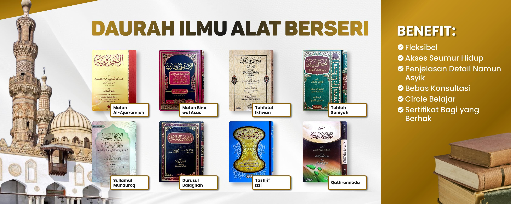
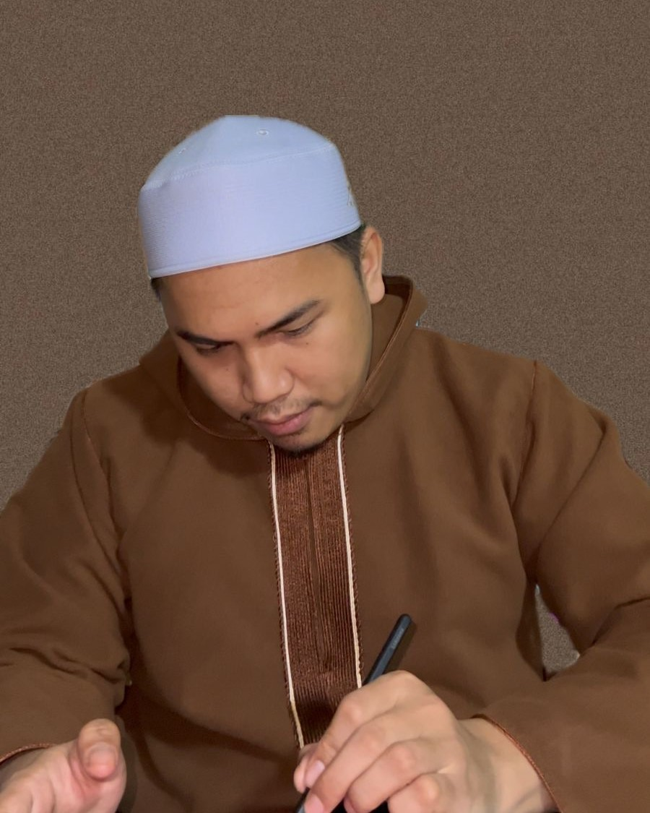

Mendapatkan ilmu dan pengetahuan yang dapat dipertanggung jawabkan
Daurah dan Talaqqi Ilmu Alat berseri
Fahim Turast adalah platform pendidikan yang fokus pada ulumul 'arabiah dan ' aqliyah. Dengan pembelajaran bertahap (tadarruj) dari mubtadi (dasar) hingga muntahi (lanjutan).
• 📚 Daurah/Talaqqi Ilmu Alat Berseri
• 📍 Offline dan Online (E-Course)
• 📝 Bertahap, Sistematis dan Mendalam.
• ✅ Cocok untuk semua kalangan


Pelajar
Course
Prakata Pengajar
"Saat ini, banyak orang hidup di dua dunia: dunia nyata dan dunia
maya, bahkan tak sedikit yang lebih banyak menghabiskan waktu di
dunia maya. Oleh karena itu, kita perlu memenuhi kebutuhan mereka di
dunia digital dengan menyediakan pembelajaran yang terstruktur,
sistematis, dan tertata rapi.
Dari kebutuhan inilah, Fahim Turast lahir sebagai wadah yang
menghadirkan pendidikan berkualitas dengan pendekatan modern,
menjembatani pembelajaran tradisional ke dalam ekosistem digital
yang efektif dan berdaya guna.
Alhamdulillah, sambutan dari teman-teman sangat luar biasa.
Antusiasme mereka terlihat dari semangat bergabung serta kisah-kisah
mereka tentang manfaat dan kenikmatan belajar di Fahim Turast."

Program
×
📢 MaFahim Circle
Misi Wujudkan 1000 Rumah Mudzakarah
bagi para penuntut ilmu🌻
Benefit
Ilmu yang Terjamin
Pengajar yang Kompeten dan Berpengalaman
Dibimbing oleh pemateri yang telah mengajar puluhan kitab turast dan modern.
Pemahaman Mendalam
Pengajar akan menyoroti poin-poin penting dalam kitab turast yang akan mempermudah kitab-kitab lanjutan atau masalah yang berkaitan dengan ilmu lainnya.
Penguasaan Ilmu Alat
Merasakan bagaimana ilmu alat benar-benar menjadi dasar penting dalam berbagai cabang ilmu Islam.
Bebas dan Gratis Konsultasi
Thalib dapat bertanya langsung kepada pengajar melalui WhatsApp, setelah belajar untuk pemahaman mendalam.
Fasilitas Modern
Menggunakan Smart TV untuk pembelajaran offline dan akses video pembelajaran berkualitas tinggi melalui YouTube.